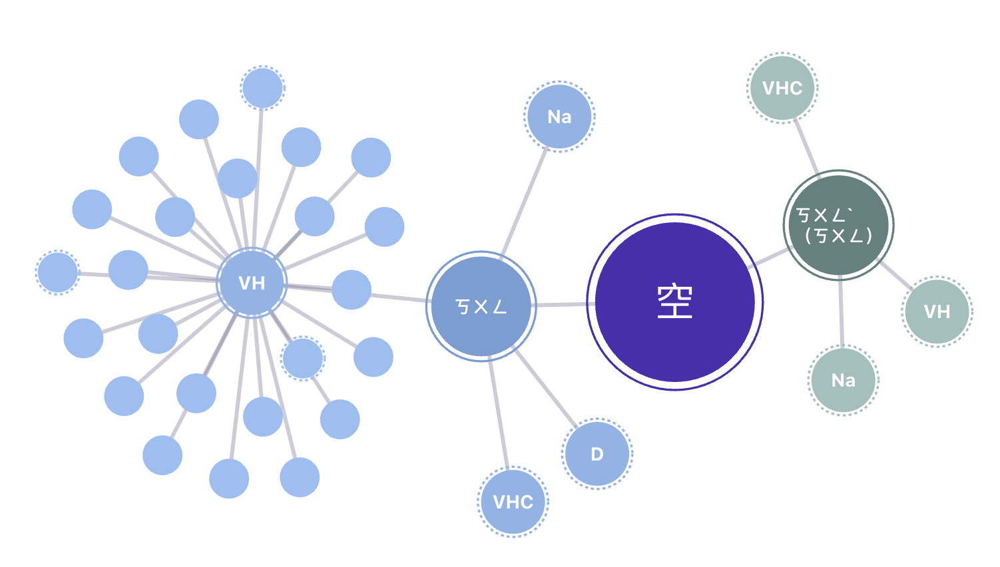

![]()
摘要：
在這次分享中，我想先從大型語言模型如何協助佛學的語言分析開始。 我將以「空」為例，探討此概念的歷時語意演變，特別是同素異序之雙音節並列結構詞彙之間的競爭與語意轉化。(計算語言學) 接著，我將試圖探討佛學中的「空性」（Śūnyatā）與機器學習表徵模型之間的相似性，對於模型解釋與發展提供新的角度。（計算哲學）
語言與觀念的轉化：文字般若的當代應用
將佛教經典（如《心經》或《金剛經》）轉化為AI可理解的形式，並讓AI進行文本分析與語意詮釋。
- 詞彙語意分析
「空」「無」「無常」「虛無」「空性」
「有」

embeddings
歷時語意演變分析
同素異序之雙音節並列結構詞彙的競爭與語意轉化 空虛｜虛空
空性（Śūnyatā）與機器學習模型
空性（Śūnyatā）是佛教中非常深奧的哲學概念，主要描述所有現象的「無自性」（absense of inherent existence），即萬事萬物並無一個固定不變的本質，不是固定不變的實體存在，而是依賴於無數條件、因緣和合（Pratītyasamutpāda, interdependent origination）而存在。
這種觀點與機器學習中的模型學習、特徵表徵（feature representation）、甚至神經網絡的權重更新過程有一些非常有趣的聯繫。
- 「無自性」：特徵表示的流動性與條件依賴性
空性強調任何事物都不是單獨、獨立存在的，而是依靠多重條件而生。這個概念可以與機器學習中「特徵表示」的學習過程聯繫起來。
特徵表示的條件依賴性 在深度神經網絡中，每一層學習到的特徵表示（feature representation）是依賴於前一層輸出與網絡權重的條件而生成的。這些特徵表示（例如 CNN 中的邊緣檢測器、形狀檢測器）並非固定不變的實體，而是在不同的資料環境、不同的訓練策略下可以有不同的形式。換句話說，特徵表示的本質是無定型的，它們取決於所學習的資料、模型架構、訓練過程等條件，這正是「無自性」的體現。
向量表示的非固定性：詞向量的空性特質 例如在自然語言處理中，詞向量（word embeddings）代表了每個詞在高維向量空間中的一個點。然而，這個向量表示是動態的，並會隨著模型、語料、甚至語境的不同而發生變化。對於某個詞（如 “bank”），它在金融領域與河流領域中具有完全不同的表示。這意味著詞向量的意涵並不是一個固定的本質，而是隨著資料的變化而變化的條件產物，正如佛教所說的「緣生性」（dependent origination）與「無自性」。
- 「因緣和合」：模型結構的依賴關係與條件生成
空性中的「因緣和合」觀點認為，所有現象都是眾多因緣條件的暫時組合。當條件改變時，現象的形式也隨之改變。在機器學習中，我們可以將這個觀點映射到模型的結構設計和調整過程。
神經網絡層之間的條件相依性 在深度學習中，模型中的每一層（如卷積層、注意力機制層）都是在其他層的基礎上建立起來的。每一層的輸出依賴於前一層的表示和當前層的權重設定。當我們更改某一層的權重時，後續所有層的輸出也會發生變化。這就如同佛教中所說的「此有故彼有」（when this exists, that comes to be）：各層之間相互依賴，無一獨立存在，只有在特定的條件下才能顯現出當前的模式。
生成模型中的條件生成（Conditional Generation） 例如，變分自編碼器（Variational Autoencoder, VAE）和生成對抗網絡（GAN）都是基於特定條件生成新樣本的模型。VAE 中，潛在變量（latent variables）是通過與輸入樣本的相互關係來生成新資料的，而 GAN 的生成器則依賴於與判別器（Discriminator）的對抗性條件才能生成高質量的樣本。這些生成過程反映了「因緣和合」的觀點：模型中的任何輸出都是依賴於多種條件的組合，最終形成我們看到的結果。
- 「空性」：模型中的「表示空間」與潛在語意的多重流動性
在機器學習中，模型學習到的知識通常表示為一個高維度的「特徵空間」或「表示空間」（representation space），這些空間並不是實體的對象，而是模式的集合。這些表示空間的變動性和抽象性揭示了「空性」的特質。
表示空間中的空性：自編碼器與表示壓縮 在自編碼器（Autoencoder）模型中，原始資料被壓縮到潛在空間（latent space）中。這個潛在空間中的每一個點雖然代表了原始資料的一個抽象表示，但它本身並不具有固定的形態或意涵。它只是某個條件集合的符號化表徵，隨著模型訓練過程的變化而改變。因此，潛在空間中的表示是一種「空的表示」：它僅僅是可能性的表現，而不是某個具體物體的再現。
生成模型的空性與虛擬現象的顯現 生成模型（如 GAN）在創造圖像、語音或文本時，它所生成的現象（如一張逼真的人臉）在數學意義上只是一組向量的變換結果，並非真實世界中存在的對象。這樣的生成圖像是一種「如幻如夢」的存在形式：它有形象但無實體，有模式但無自性。這正是佛教空性思想中的「幻象觀」——所有現象都是在特定條件下暫時顯現的虛幻（illusory）存在。
- 模型泛化（Generalization）與「無常性」的理解
空性強調現象的變動性（impermanence），認為一切事物都不斷處於變化之中。這在機器學習中對應於模型的泛化能力。當模型執著於某一種模式或資料集時，它的表現就會在新資料集上出現偏差。
- 過擬合與執著：模型的無常性表現 當一個模型過度擬合某個訓練集時，它便對該資料集的特定模式產生了「執著」，忽視了資料背後的空性與變動性。一旦進入新的資料分佈（distribution shift），模型的表現會崩潰。這反映了佛教中對執著的批判：當我們過於執著於現象的固定形式時，便無法適應新的環境與條件。因此，設計更具泛化能力的模型（如正則化、遷移學習）可以被視為一種「破執」（overcoming clinging），使模型能更靈活地看待資料分佈的無常性。
- 空性的實踐：從複雜模型到簡化模型的轉化
在實際應用中，模型的複雜性常常導致其對特定條件的過度依賴。通過模型壓縮（model compression）和知識蒸餾（knowledge distillation），我們可以將大型模型的知識轉移到較小的模型中，去除不必要的依賴與冗餘。
- 模型壓縮中的空性實踐 這種壓縮過程可以被理解為「去除多餘的執著」，即找到模型中真正有效的表示，而不是所有細節的重現。透過這種去繁從簡的方式，我們達到了一種更接近「空性」的模型結構：模型中的每個參數和特徵都是在去除了冗餘條件後的最小表現形式。
總結來說，佛教的空性觀點可以為機器學習模型提供新的思考視角。
Citation
@online{hsieh2024,
author = {Hsieh, Shu-Kai},
title = {在空中相會：從佛學到大型語言模型的跨學科對話},
date = {2024-10-10},
url = {https://loperntu.github.io/posts/2024-10-20-quarto-blogs/},
langid = {en}
}